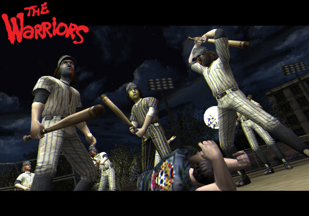

Que es The warriors?
The Warriors es un videojuego de 2005 producido por la compañía Rockstar Games y desarrollado por Rockstar Toronto para PlayStation 2, Xbox y PlayStation Portable. El juego está basado en la película de mismo nombre de 1979, la cual estaba basada a su vez en la novela homónima de 1965 escrita por Sol Yurick. The Warriors, a diferencia de los Grand Theft Auto, no permite coger vehículos, pero sí hacer otras cosas como atracar tiendas, robar radios de coches, aparte de tener unos gráficos superiores a la saga Grand theft Auto. Esto es debido a que en Grand Theft Auto se tiene un mayor mapeado lo cual en consecuencia se disminuyen los gráficos. The Warriors es un poco más avanzado en gráficos, jugabilidad, cosas que puedes hacer, en armas blancas, en combate cuerpo a cuerpo y realismo, debido a que el mapeado es más pequeño. También puedes arrojar a personas a las vías del tren (en Grand Theft Auto IV en las vías del metro también se puede). En este juego se pueden coger botellas, palos, machetes, trozos de tubería, sillas, radios, bolas y tacos de billar, cócteles molotov, etc. También este juego permite un modo para dos jugadores, haciendo así las misiones más fáciles; también se pueden hacer minijuegos, como el modo «Batalla», en el cual se tiene a disposición una serie de distintos tipos de enfrentamientos y competiciones, como «Uno contra uno», «Batalla campal» (cinco pandilleros por bando), «Ejército» (nueve pandilleros por bando), «Spray», en el cual se debe completar un grafiti antes que el rival, etc. En este modo, se puede elegir entre el modo «Jugador 1 contra el ordenador» o «Jugador 1 contra jugador 2», excepto en «Llevar a Mercy», que es exclusivo para dos jugadores. El juego además permite hacer misiones anteriores a la narración propiamente dicha para ver cómo se unieron algunos miembros a la banda o ver cómo se creó la misma.
Curiosidades
El videojuego contiene propaganda de la marca de ropa deportiva Adidas. Incluso algunos peatones usan las clásicas remeras con franjas en las mangas. Para hacer más real el entorno de las calles, los desarrolladores lograron decorar las paredes con graffitis de artistas verdaderos como IZ the Wiz y Seen, quienes si estuvieron presentes y fueron participes durante la época en la que el graffiti comenzaba a popularizarse.
Personajes principales
Cleon:ex-destroyer. Es el jefe de guerra de Los Warriors, es afroamericano y siempre llevate una bandana con colores similares a los de un tigre, termina muerto por una grave confusión en mano de los Riffs.
Swan: ex-destroyer. Es la mano derecha de Cleon, es quien asume el mando tras la muerte de Cleon, es sabio y de pocas palabras, pero es muy brutal a la hora de pelear.
Ajax: Los músculos de la banda, es el más fuerte y rudo del grupo y es el que más resiste a un ataque entre muchos pandilleros rivales aunque tiene una gran debilidad por las mujeres lo que causa que sea arrestado por una mujer policía encubierta al intentar violarla.
Vermin: ex-destroyer. Es un soldado muy importante en la banda, fue el que estuvo al lado de Cleon cuando creo los Warriors. Es un tipo que hace bromas de vez en cuando con los reclutas (exepto por Rembrandt) y tiene un estilo muy brutal de pelea.
Cochise: Otro soldado de la banda, es afroamericano y tiene un estilo de pelea similar a las artes marciales.
Snow: Es un tipo bastante resistente y ágil para pelear, tiene un peinado semi-afro. Defiende a los débiles de la banda.
Rembrandt: Es el grafitero de la banda, quizá el miembro más joven, a diferencia de sus compañeros el es puertorriqueño. Siempre se dedica a difundir la marca de Los Warriors para que sean conocidos, e incluso falta el respeto a las bandas rivales pintando sobre sus graffitis con una "W" que simboliza la presencia de Los Warriors.
Cowboy: Es un soldado de la banda que tiene un estilo de pelea bastante decente, siempre usa un sombrero de vaquero que hace que valga su apodo.
Fox: Es el explorador de Los Warriors, es muy bueno para escapar de un gran grupo de pandilleros rivales y bastante sigiloso para pasar desapercibido, su función es explorar el terreno para encontrar objetivos o salidas para escapar si las cosas se ponen serias. Su carrera termina cuando es atropellado por un tren al ser empujado por un policía.
Ash: Ingresó unos días más tarde que Rembrandt y padece de claustrofobia. Es un recluta que admira a Ajax y busca ser como él, termina siendo asesinado por Los Destroyers.
Bandas del videojuego
The Warriors: Es la banda protagonista del juego, liderada por Cleon y posteriormente por Swan y la única que el jugador puede manejar en el modo Historia, su territorio es Coney Island donde se disputan el territorio con Los Destroyers. Visten ropa roja principalmente conocidos por sus chalecos. Sus ingresos, vienen de asaltos a tiendas, peatones y bandas rivales, extorsión a negocios y robo de estéreos.
The Destroyers: Es una banda compuesta por borrachos y drogadictos dirigida por Virgil, controlan East Coney y sus enemigos a muerte son Los Warriors, son la primera banda en dominar Coney Island aunque sus rivales lograron que pierdan reputación. Visten de azul con chaquetas de Jeans que tienen escrito el nombre de la banda. Sus ingresos vienen de las drogas.
Jones Street Boys: Es una banda que controla la calle Jones, no son una banda muy peligrosa ya que son considerados "niñitos de papá" pero cuentan con el apoyo de la policía de New York. Su líder es Knox y visten camisas con franjas amarillas y negras. Sus ingresos provienen de robos y del arreglo de coches.
The Savage Huns: Es una banda asiática que controla Chinatown, su líder es Ghost y se dedican a extorsionar a los dueños de los negocios de la zona, son excelentes peleadores porque se manejan con artes marciales y visten trajes grises con algún gorro en sus cabezas, otros miembros visten una especie de keikogi negro con diseños en rojo.
Hi-Hats: Es una banda compuesta por mimos y se consideran artistas. Controlan SoHo y tienen una gran rivalidad con los Electric Eliminators y posteriormente con Los Warriors. Su líder es Chatterbox, un mimo obeso que tartamudea al hablar y es habitual consumidor de flash. Sus ingresos son desconocidos.
Electric Eliminators: Son rivales de los Hi-Hats. Son bailarines de breakdance y participan de vez en cuando en competencias de graffitis aunque son violentos si la ocasión lo requiere. Visten chaquetas amarillas con su símbolo.
Moonrunners: Es una banda dedicada integramente al graffiti que vive en Pelham en la zona de las cocheras de trenes en donde realizan sus obras y las defienden de cualquier otra banda. Siempre suelen usar sus sprays a la hora de pelear. Visten con chaquetas grises o rojas con el símbolo en la espalda.
Panzers: Se dedican a participar en competencias de graffitis. Visten ropa de camuflaje estilo militar con boinas rojas. Todos los miembros de esta banda son de raza negra.
ENTRADAS RELACIONADAS

BattleCats
The Battle Cats es un videojuego de defensa de torres gratuito desarrollado y publicado por....
Last updated 3 mins ago

Minecraft
Minecraft es un videojuego de construcción de tipo «mundo abierto» o en inglés sandbox creado originalmente por....
Last updated 5 mins ago

Half-Life
Half-Life (estilizado HλLF-LIFE) es un videojuego de disparos en primera persona del género ciencia ficción, con toques de techno-thriller, desarrollado por....
Last updated 10 mins ago